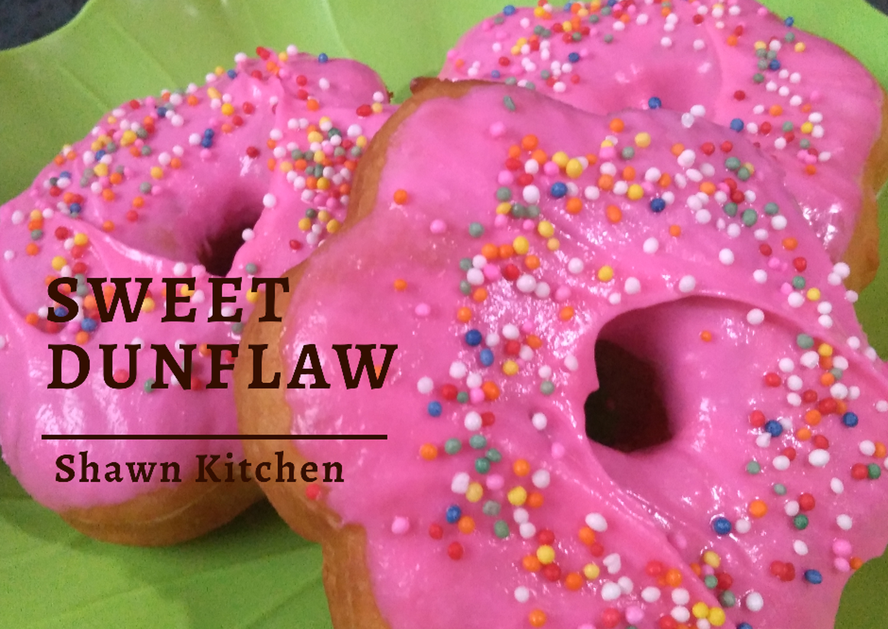
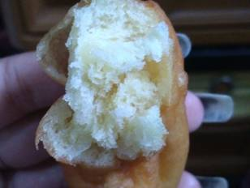
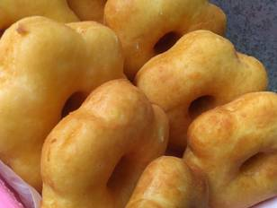
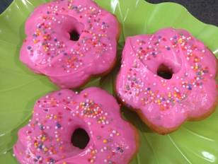

Resep Sweet Dunflaw

Bahan-bahan
Langkah-langkah
- Bersihkah kentang (jgn dikupas) rebus hingga matang/empuk.
- Sambil nunggu kentang matang, siapkan Fermipan-gulpas-Vanili beri 5sdm air hangat lalu larutkan, diamkan 10 menit hingga
berbuih. (Saya lbh suka vanili dicampur diawal karna biar bisa rata pada adonan sebab vanilinya bubuk)
- Setelah kentang matang, bersihkan lalu haluskan. Lalu campurkan dengan semua bahan yang lain dalam fermipan yg sudah
dibuihkan.
- Campur adonan hingga kalis, lalu diamkan 30 menit hingga mengembang 2x adonan awal.
Setelah adonan menembang, ambil sedikit2 lalu bentuk sesuai selera, bisa bulat atau bentuk lainnya hingga adonan habis..
lalu diamkan 10 menit.
- Setelah 10 menit, siapkan penggorengan. Minyak harus banyak ya agar donat menbang sempurna. Panaskan minyak dengan api
sedang. Lalu goreng hingga adonan habis. Jangan lupa dibalik2 saat menggoreng
- Setelah digoreng, dinginkan donat terlebih dahulu, baru di beri toping ya.. textur setelah digoreng seperti ini ya ↓↓↓

- Setelah donat dingin, dan siap ditoping.

- Dan siap dihidangkan... 😍😍😍
